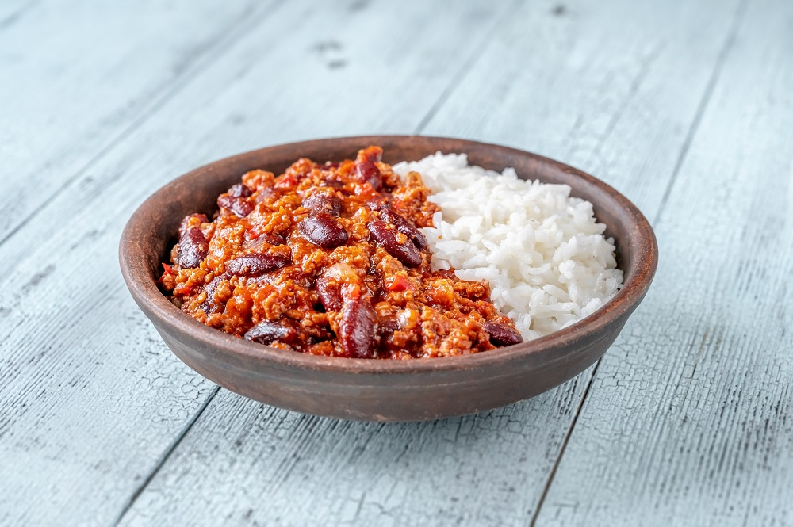

Chilli Con Carne
Home

Ingredients
- 500g rice
- 1kg minced beef
- 2x 400g cans of tomatoes
- 2x 400g cans of kidney beans
- 100g sweetcorn
- 1 small onion
- 2 packets of chilli seasoning mix
Instructions
- wash rice and add to cooker with 750ml of water and start cooker
- dice onion and strain kidney beans
- preheat pan on medium, then add oil, and add onion to saute till translucent (approx. 5 mins)
- add beef and cook till brown, then add seasoning mix and stir
- add both cans of tomatoes and bring to boil
- add kidney beans and corn and mix then allow to simmer till rice is cooked
- enjoy!